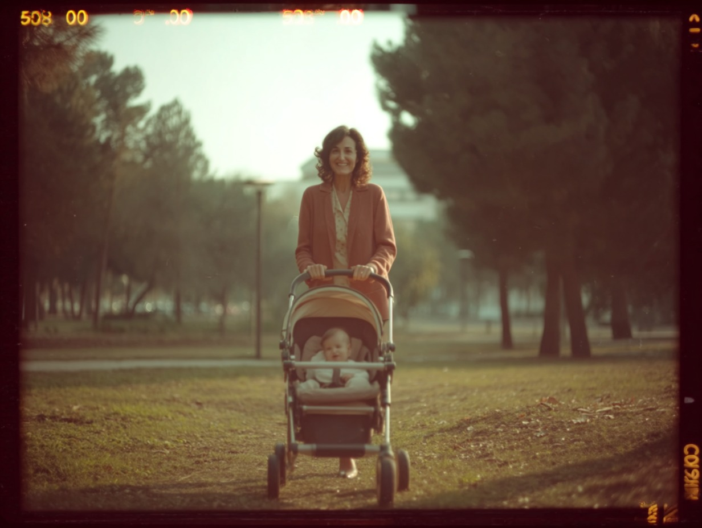
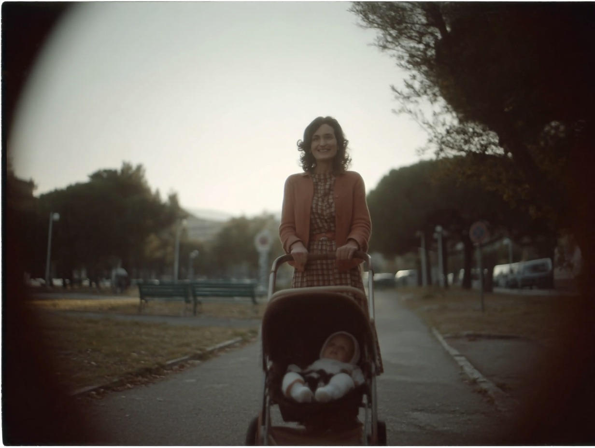
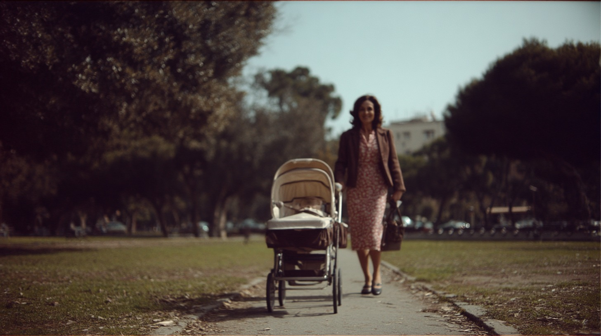

Challenge
How can a memory-like 1977 texture be defined before shooting?

How can a memory-like 1977 texture be defined before shooting?
Super 8 grain, color response, softness and period feeling are explored as a visual reference.
A clearer texture direction for camera tests, grading and production design.

A simple scene becomes the base for defining period feeling.

The image language is tested before camera and grading decisions.
Flares, foliage and frame instability define a restrained period texture.
The study gives direction, cinematography, grading and production design a shared visual target before the shoot.